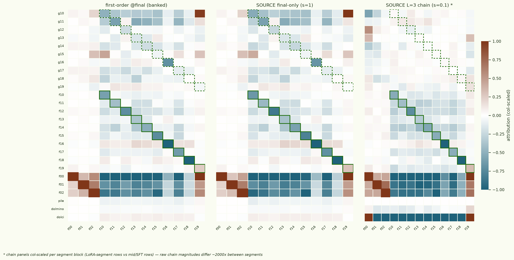
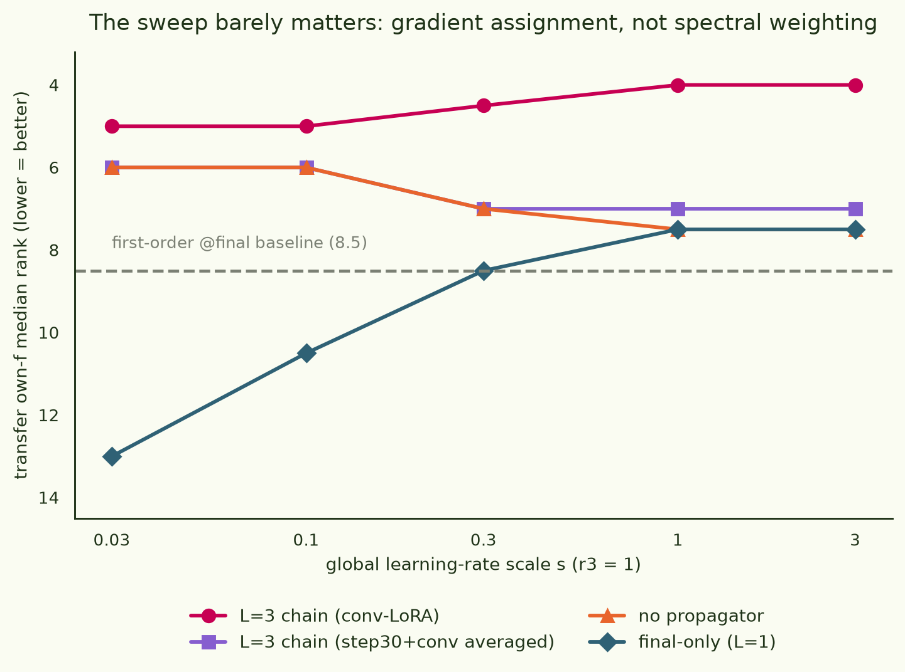

Three-stage attribution vs the live-gradient attractor
This is the second outing for (Bae et al. 2024) on a real multi-stage organism. In part one, splitting a midtrain→SFT organism into two segments and scoring the midtrain documents with midtrain-checkpoint gradients rescued a half-failed attribution case (P@100 0.52 → 0.98). The obvious next question: does the recipe keep paying as the chain gets longer? Here it gets a third segment and a harder organism — the binding-functions set-2 model, a gemma-3-12b trained in three genuinely different stages (full-parameter midtrain → instruct SFT → LoRA finetune), where each stage teaches something the next stage builds on.
The organism exists because of a cross-stage coupling worth attributing: each of ten functions has a taught only in midtraining and a disjoint taught only in the LoRA finetune, and the midtrain g-docs are what make the f-task learnable — with the matched midtrain substrate the finetuned model reaches 0.82 on held-out f-questions (MC-code) against 0.04 without it. A multi-stage attribution method should be able to see both halves of that story in one ranking: f-queries should surface both the f-data (stage 3) and the paired g-data (stage 1).
The three-segment chain buys the f-side and destroys the g-side: transfer own-f median rank improves 8.5 → 4.0, flat across the entire hyperparameter sweep — but g-doc attribution collapses from rank 1.0 to 10.5–15, because the chain scores g-docs with midtrain-checkpoint gradients where the g-task is already absorbed. The governing phenomenon is a : at any checkpoint, query and document gradients alike are dominated by whatever is being learned at that moment.
§1SOURCE recap, and what L=3 adds
SOURCE approximately unrolls training: within a segment of summed learning rate η̄K with (projected) Gauss–Newton curvature H̄ treated as stationary, a document's accumulated effect and its decay under later training are scalar functions of H̄'s eigenvalues — Fsegment(σ) = (1 − e−η̄K·σ)/σ for within-segment accumulation, and the propagator Fbackward(σ) = e−η̄K·σ for how each later segment erases it (part one has the full derivation). With one segment it reduces to a damped influence function with derived damping λ = 1/(η̄K). Everything again lives in the projected space, identical to the banked first-order study on this organism, so banked gradient rows are reusable.
What is new at L = 3 is that the segment routing becomes the interesting decision: each candidate document is scored with gradients taken at its own stage's checkpoint, transformed by its own segment's accumulation operator, with the query gradient (taken at the final checkpoint) propagated backwards through every intervening segment:
| segment | data scored here | gradient checkpoint | query reaches it via |
|---|---|---|---|
| 1 · midtrain | g10–g19, Dolmino | midtrain end (new rows, this run) | Fbwdlora then Fbwdsft |
| 2 · SFT | Dolci | SFT end (banked) | Fbwdlora |
| 3 · LoRA | f10–f19; f00–f02 (hypothetical) | LoRA step-30 + converged (banked) | directly |
| — excluded | Pile (pretrain proxy, unmodeled segment 0) | — | scored only by the L=1 baseline |
Four methods per sweep point: the full L=3 chain with the LoRA segment's paper-faithful two-checkpoint averaging (step-30 + converged Fishers merged, rows elementwise-averaged); a conv-LoRA variant of the chain (converged-checkpoint LoRA rows and curvature only — measures what the averaging buys); a no-propagator ablation (per-segment gradients and curvature, decay operators dropped); and a final-only baseline (L=1 at the converged checkpoint with η̄K summed over all three stages — i.e. the plain influence function with derived damping).
§2The organism, and what was banked vs new
- organism
- arcadia-impact/pane-binding-functions:
google/gemma-3-12b-pt →
midtrain2-mixed-hf(48 AdamW steps; set-2 g-label docs for ten functions + Dolmino filler, 50:50) →midtrain2-sft(Dolci instruct SFT, 141 steps) →lora-mid2-bind(LoRA r64 α128, all Linears, 1,500 steps on the f-label task data) - η̄K per stage
- measured, not derived: midtrain Ση = 2.62×10−4; SFT Ση = 7.70×10−4; LoRA Ση = 8.2345×10−2 from trainer_state (cosine, warmup 30; cumsum at step 30 = 1.45×10−3)
- sweep
- global scale s ∈ {0.03, 0.1, 0.3, 1, 3} on all three η̄K (the AdamW spectral-units caveat) × LoRA-only multiplier r3 ∈ {0.1, 1, 10} (the LoRA α/r parameterization makes the third stage's units doubly uncertain)
- pool
- 17,500 docs, 26 sources: g10–g19 (10×500, midtrain), f10–f19 (10×500, LoRA), f00–f02 (3×500 — set-1 functions never trained in any stage of this organism, pure distractors), Dolmino 2,000, Dolci 2,000, Pile 2,000
- queries
- final-checkpoint gradients, pooled per function exactly as the banked study: transfer (MC+inversion) and regression f-queries over fns 0–2 + 10–19, g-queries over fns 10–19
- features
- LoGra rank 32, same projection family as the banked binding-functions attribution runs; per-segment projected Fisher blocks eigendecomposed exactly
- new GPU work
- one midtrain-checkpoint row pass (7,000 candidate + 4,096 fit rows) — everything else banked; ~1.5h on one H100, ~$4.5
The banked rows (SFT-end, LoRA step-30, LoRA-1500 — from the earlier first-order study on this organism) were re-verified before any scoring: all 17,500 pool doc_ids match exactly, and 16 recomputed candidate rows agree with the banked ones at cosine ≥ 0.9976 on the sources that matter for this run. The banked rows were computed on an H200, this run on an H100 — cross-hardware bf16 gives relative error ~5×10−2 at cosine > 0.99, with two extreme-norm pile/dolci outliers (cosine 0.56 / 0.88) reported but not gated, since Pile is excluded from chain scoring anyway. As a stronger end-to-end check, the analysis pipeline reproduces the banked per-checkpoint first-order trajectory exactly (converged transfer own-f 8.5 / paired-g 6.5; regression 23.0 / 20.0 on the full pool) before any SOURCE number is computed.
Metrics throughout: for each function's pooled query, every pool source gets a mean score, sources are ranked, and we report the median (over the ten functions) rank of the query's own dataset — own-f for f-queries, own-g for g-queries — plus the paired cross-stage dataset (paired-g for f-queries and vice versa). One comparability caveat up front: the chain methods rank 25 datasets (Pile excluded), the final-only baseline and banked full-pool numbers rank 26 — worth ±0.5 rank when comparing across that line.
§3The trade
![Three-panel heatmap of transfer-query attribution, candidates (rows: g10–g19, f10–f19, f00–f02 controls, pile, dolmino, dolci) by query function (columns: f00–f02, f10–f19), column-scaled diverging red-blue. Solid green boxes mark own-f cells, dashed green boxes paired-g cells, dark red boxes the set-1 control own-f cells. Panel 1: banked first-order at the final checkpoint. Panel 2: SOURCE final-only at s=1, visually similar. Panel 3: the SOURCE L=3 chain at s=0.1, column-scaled per segment block, where the f-diagonal is stronger but the g-block loses its structure and the dolci row saturates.](figs/attr_source_transfer.png)
Across the whole 5×3 (s, r3) grid the conv-LoRA chain holds transfer own-f at 4.0–5.5 (median 8.5 for the banked final-checkpoint baseline, best 4.0 at several sweep points) — the promised win: a single cross-stage ranking in which the f-queries' own finetuning data comes out near the top. But the same chain buries the cross-stage signal this organism was built to exhibit: paired-g drops from 6.5 to 10–14, and for g-queries the own-g rank collapses from the final-only methods' 1.0–3.0 to 10.5–15. Untrained-function controls stay clean everywhere (control own-f 1.0), and the never-trained f00–f02 distractors sit at ~3 for the chain — more on that below.
| median rank (converged-final) | first-order @final (banked) | SOURCE final-only (best) | L=3 chain (conv-LoRA) | L=3 chain (step30+conv avg) |
|---|---|---|---|---|
| transfer own-f | 8.5 | 6.5 | 4.0–4.5 | 6–7 |
| transfer paired-g | 6.5 | 6.5–9 | 10–14 | 10–14 |
| g-targets own-g | — | 1.0–3.0 | 10.5–15 | 10.5–15 |
| regression own-f | 22.0 | ~22 | ~22 | ~22 |
No configuration wins everywhere. And note the last row: on regression queries every method sits at ~22 of 25–26. That row is the first exhibit of the phenomenon that explains the rest of the table.
§4The live-gradient attractor
The banked first-order study already showed attribution signal migrating across checkpoints rather than accumulating: transfer own-f goes 2.0 → 16.5 → 8.5 across SFT-end → LoRA-step-30 → converged, and regression own-f goes 1.0 → 1.0 → 22.0. The unifying reading is that at any checkpoint, both query and document gradients are dominated by whatever is being learned at that moment — a live-gradient attractor. Three exhibits from this run:
![Three-panel heatmap of g-label-query attribution, candidates by g-query (columns g10–g19), column-scaled diverging red-blue. Solid green boxes mark own-g cells, dashed green boxes the paired-f cells. Panel 1: SOURCE final-only at s=1, with a strong visible red diagonal through the g-block (own-g median 1.0). Panel 2: the L=3 chain with mid-segment rows at the midtrain-end checkpoint — the g-diagonal is gone except g12 and g15, and the dolci row saturates. Panel 3: the L=3 chain with mid-segment rows at the midtrain-start (base) checkpoint — still no diagonal, and the g-block turns broadly negative-blue.](figs/attr_source_g.png)
Exhibit 1 — the converged checkpoint. By step 1,500 the LoRA task is done: regression loss is ~10−5, so the regression queries' gradients are numerically dead, and their own-f rank is ~22 for every method — final-only, chain, no-propagator, averaged. No amount of segment machinery resurrects a dead query gradient; SOURCE transforms the query it is given, and if the final checkpoint has converged on the behaviour being asked about, there is nothing to transform. Meanwhile the g-structure — long since stopped being trained, but also never overwritten — resurfaces: the final-only method puts own-g at 1.0.

Exhibit 2 — step-30 as the final checkpoint. Re-running the whole pipeline with LoRA-step-30 as the endpoint (banked step-30 queries and rows, LoRA η̄K truncated to its step-30 cumsum, r3 = 0.01761) shows the attractor at full strength: at the moment the f-format task is being actively learned, everything routes to the f-data. G-queries attribute to f-datasets (paired-f 5.0–6.5 for the chain methods, 6.5–9 for final-only) while their own g-data sits at 10.5–15.5 for every method including final-only; even the never-trained f00–f02 distractors rank ~3 in f-query rankings, purely because they share the f-task's surface format. The attractor is a property of the checkpoint, not of the estimator.
Exhibit 3 — segment-level convergence inversion. SOURCE's per-segment assignment — "score each stage's data with that stage's gradients" — sounds like exactly the fix, but the only weights that exist for the midtrain and SFT stages are their end-of-stage checkpoints, and the end of a stage is where that stage's own data is already absorbed. Scoring g-docs at the midtrain-end checkpoint is scoring them at their own convergence point — the same inversion that kills regression queries at the final checkpoint, now happening inside a segment. That is why the chain loses the g-side: it moved the g-docs' gradients from a checkpoint where g was retrievable (the final one) to a checkpoint where g was freshly converged. The paper's within-segment checkpoint averaging (4–6 checkpoints spread through each stage) would blunt this, but mid-stage weights were never saved for midtrain or SFT.
Exhibit 4 — the start-of-segment rescue that wasn't. If end-of-stage deadness were the whole story, recomputing the mid-segment gradients at the start of midtraining — the base model, where the g-corpus is maximally unlearned — should restore the g-diagonal. It doesn't (Fig. 2, right panel): own-g stays at 14–15 across the sweep with start-only rows, and 10–14.5 with start+end averaged rows (mean gradients, Fishers fit on both checkpoints' rows) — essentially identical to the end-of-stage rows, while transfer own-f is untouched (chain 4.0–5.0). So the chain's g-side failure is not only about which checkpoint the documents' gradients come from; the transported query itself is the problem. A g-query at the final checkpoint has to survive three Fbackward hops through non-commuting curvatures before it meets the mid-segment rows, and what arrives no longer points at the g-subspace — at the base checkpoint the g-labels have never been bound at all, so the doc gradients are generic next-token gradients on the template. One genuine curiosity, present with end rows (~6.5) and slightly stronger with start rows (~4.5): regression queries' paired-g rank under the chain beats final-only's ~19 — the transported regression query overlaps g-data better than f-data — but with regression own-f dead at ~22 that is a consolation prize, not a rescue.
§5What didn't matter: the sweep, the propagator, the averaging

Three null-ish results that sharpen the story. First, the sweep is remarkably flat: the chain's own-f moves by at most ~1 rank over s ∈ {0.03…3} × r3 ∈ {0.1, 1, 10}. On this organism what matters is the checkpoint/gradient assignment, not the spectral weighting on top of it. Second, the propagator is again ≈ nil on rankings: the no-propagator ablation matches the full chain everywhere to within ~0.5 rank (in part one the propagator's real contribution was routing composition, not retrieval rank; here there is no channel where dropping it changes a conclusion). Third, the paper-faithful LoRA checkpoint averaging actively hurt: merging step-30 into the LoRA segment's rows and curvature costs 2–3 ranks of own-f (6–7 vs conv-only's 4.0–4.5) — the step-30 rows carry the attractor-era noise of Exhibit 2, and averaging it in dilutes the converged signal. Averaging over checkpoints only helps if the extra checkpoints add signal about the same structure; here they add a different regime.
§6What this means for multi-stage attribution
Parts one and two look contradictory at first: the same recipe — score a stage's data with that stage's checkpoint gradients — rescued the sheeran/negneg organisms and wrecked the g-side here. The reconciliation is the attractor. In part one, the midtrain stage had not converged with respect to what the queries asked about (the implanted belief kept training all the way to the stage boundary, four epochs of paraphrases), and the SFT stage had buried that signal at the final checkpoint — so moving to the midtrain checkpoint moved toward live gradients. Here the midtrain stage ends with the g-task absorbed, and nothing afterwards overwrites it — so the final checkpoint was already the better place to see g, and moving to the midtrain-end checkpoint moved away from live gradients. The emerging rule: attribute data at a checkpoint where its learning is live — and that is not necessarily inside its own stage. "Its own segment's checkpoint" is a proxy for that rule which works exactly when stages end before converging on the queried behaviour, or when later stages overwrite it.
Concretely, what SOURCE would need to work as advertised on organisms like this one: within-segment checkpoints saved mid-stage (the paper's own prescription — the step-30-style checkpoint is where the g-segment's live gradients lived, and only end-of-stage weights existed here), and a way to detect or down-weight the convergence-inversion regime — a TrackStar-style optimizer correction is the natural candidate, since AdamW's normalized steps keep updating structure that raw gradients report as dead. And for the organism's actual scientific question — is the g↔f coupling visible in the trained model? — the plain final-checkpoint estimator remains the best tool on offer: paired-g 6.5 for f-queries and own-g 1.0 for g-queries at convergence say the converged model still carries retrievable g-structure, and the segment machinery as specified does not sharpen that.
§7Caveats
Rank metrics, no counterfactual ground truth. Everything here is dataset-level median ranks over ten functions; no retraining-based LDS exists for a 12B three-stage organism, so "better" means "ranks the known-relevant data higher", not "predicts counterfactuals better". 25 vs 26. Chain methods rank 25 datasets (Pile excluded as an unmodeled pretrain segment), final-only ranks 26 — a ±0.5-rank comparability wobble wherever the two are compared. η̄K units. AdamW breaks the SGD η·H theory (part one's caveat), and the LoRA stage adds a second layer — the α/r = 2 merge and the rank-64 adapter parameterization mean the LoRA segment's η̄K is not commensurate with the full-parameter stages', hence the separate r3 sweep. The flatness of Fig. 4 says the conclusions don't hinge on either dial. One checkpoint per full-parameter segment. The averaging the paper prescribes was only possible for the LoRA segment (two checkpoints), where it hurt for attractor reasons; midtrain and SFT are represented by end-of-stage weights alone, which is exactly what Exhibit 3 is about. LoGra shadow. All gradients and curvature live in the rank-32 projected space, not the full 12B parameterization. Banked-row provenance. Reused rows were computed on different hardware (H200 vs H100); identity was verified at cosine ≥ 0.9976 on the recomputed sources with two extreme-norm pile/dolci outliers reported, not gated.
Code: gradient-kernel, experiments/source_attribution (PR #20). Paper: Bae et al. 2024, arXiv:2405.12186, "Training Data Attribution via Approximate Unrolled Differentiation". Artifacts (rows, score matrices, analysis): HF dataset arcadia-impact/pane-binding-functions-attribution under runs-source/. Organism models: arcadia-impact/pane-binding-functions. Part one: SOURCE through the SFT wall; the organism's own study: binding functions. Pod: yj9y6h5xlou36u (1×H100, ~1.5h, ~$4.5).